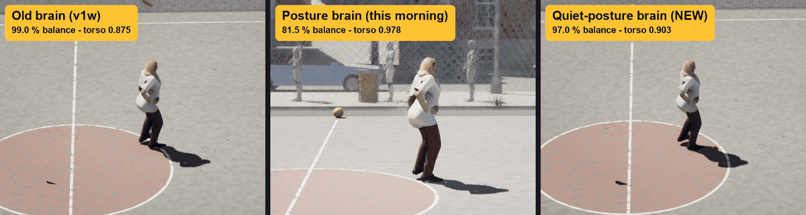
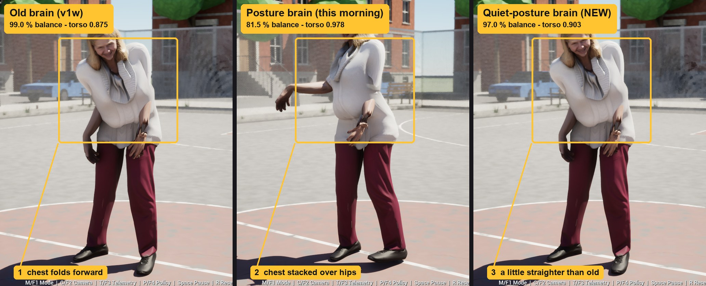
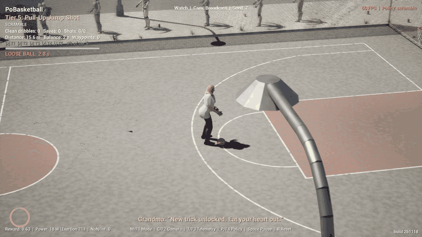
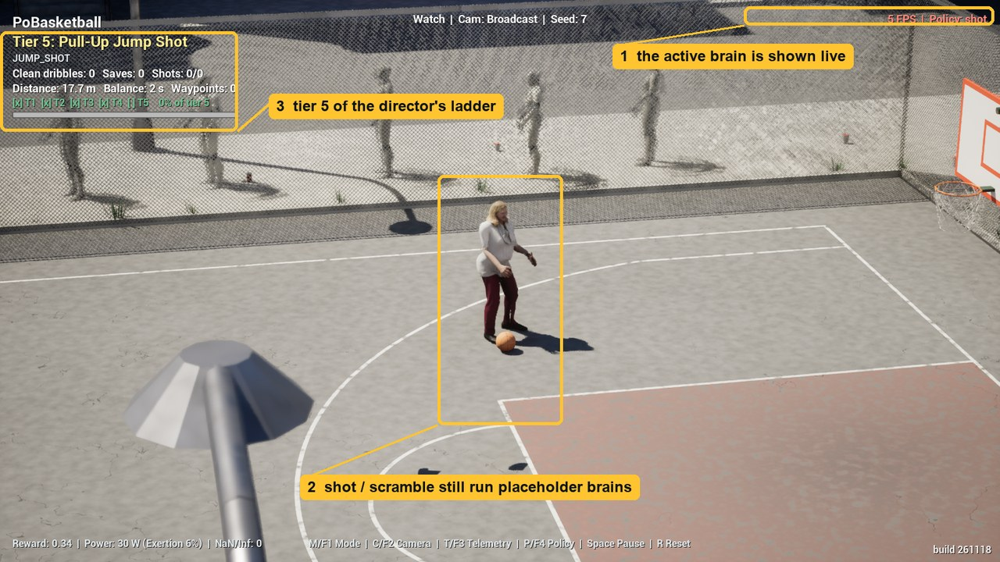

The standing brain (L0 balance) was retrained on the 29-joint body. The new production brain keeps her balance at 97 % under 100 N pushes and holds a straighter torso when nothing is pushing her. This page shows the three brains we tried, side by side in the game.
Everything that changed since the last showcase.
balance and l0_stand. It was fine-tuned from the old 99 % brain with a torso-upright reward that applies only while she is standing quietly. During a push recovery she may still bend at the waist.balance_v1w.onnx (old) and balance_posture.onnx (this morning's straight but wobbly brain) can be loaded in the game with -StreetballPolicy_balance=…. Their replays are in the web viewer.Same seed, same pushes, 0.5× slow motion, broadcast camera.

| Brain | Source | Success | Falls | Holds 100 | Torso upright | Gate |
|---|---|---|---|---|---|---|
Old (balance_v1w) | v1 brain widened to 29 joints | 99.0 % | 0.5 % | yes | 0.875 | pass |
Posture (balance_posture) | overnight run, ckpt 375M | 81.5 % | 10.0 % | no | 0.978 | fail (waived this morning) |
Quiet-posture (balance, NEW) | 1 h fine-tune, ckpt 25M | 97.0 % | 1.0 % | yes | 0.903 | pass |
200 randomised episodes, pushes up to 100 N, deterministic policy. Gate: ≥ 95 %, holds for 100 straight episodes, 0 NaN gradients. Torso upright is 1.0 for a perfectly vertical chest.
2.5 s into the match, before any push.

New in the evaluator: the reason behind every failed episode.
An episode can break more than one rule, so the bars do not add up. The posture brain failed both by falling and by stepping out. Our reading: the old brain absorbs a shove by bending at the waist, and the always-on torso reward took that move away. The new brain gets the torso reward only once she is standing quietly (1.5 s or more after a push starts), so the bend is still allowed during recovery.
Watch mode, tier 5, broadcast camera, real time.


What was verified before the brain went live.
tools/run_gate.py --level l0_stand, 200 episodes at 100 N. ONNX export matches PyTorch to 9.8e-7.replay_balance, replay_l0_stand, replay_l0. She is still standing at the end, pelvis at 0.942 m.test_warp_vs_cpu_drift was already failing before this work and is unrelated to this change.The capture runs behind this page, one per brain.
UnrealEditor.exe StreetballGym.uproject -game -windowed -ResX=1600 -ResY=900 -StreetballSeed=7 -StreetballDemoFeatures # compare against the other brains (files in Content/Sim/policies) -StreetballPolicy_balance=policies/balance_v1w.onnx old brain -StreetballPolicy_balance=policies/balance_posture.onnx posture brain # rebuild this page's media from the captures sim/.venv/Scripts/python.exe SCREENSHOTS/20261119_posture/make_media.py